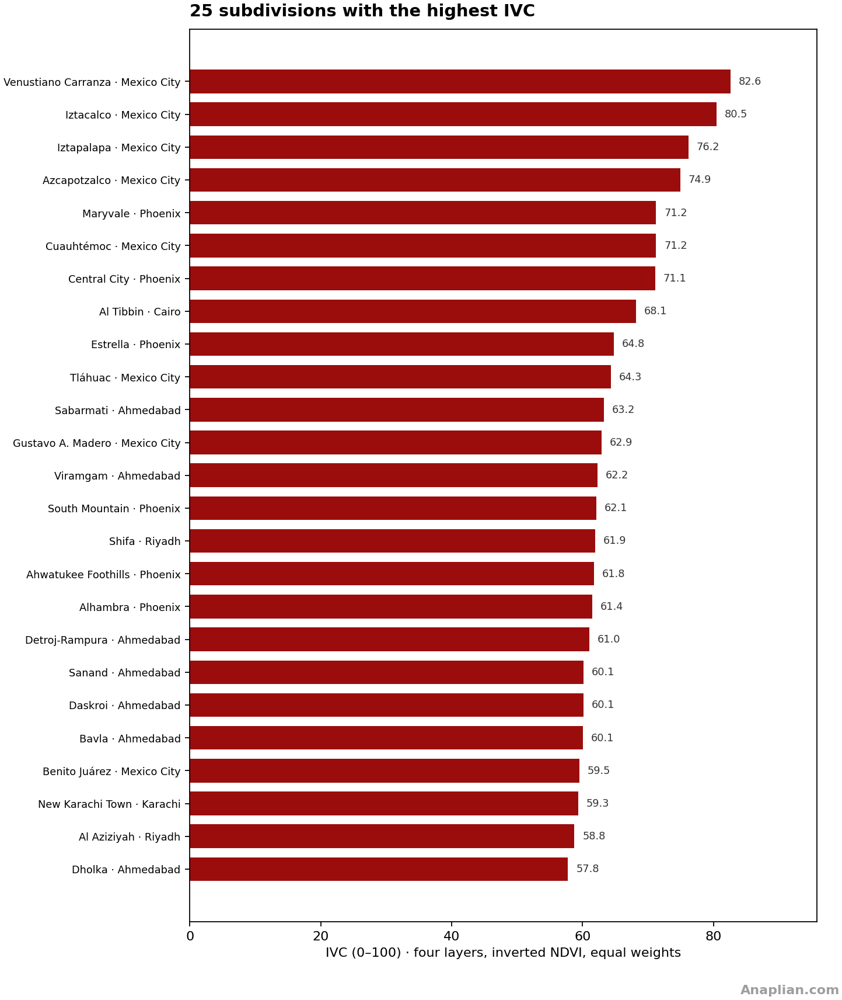
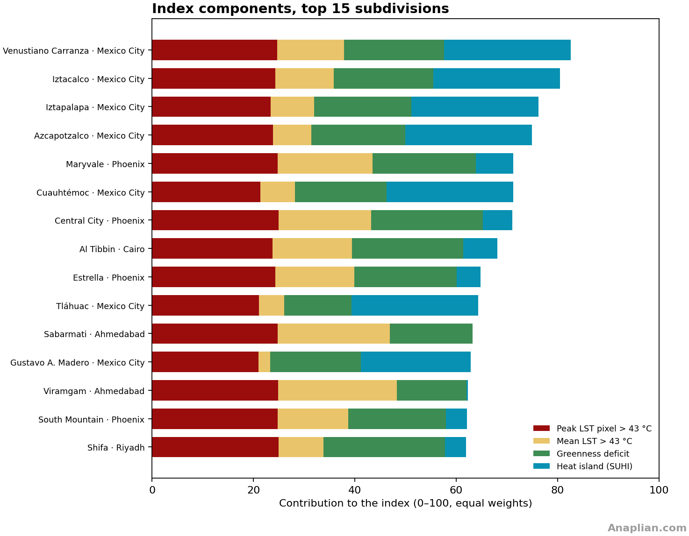
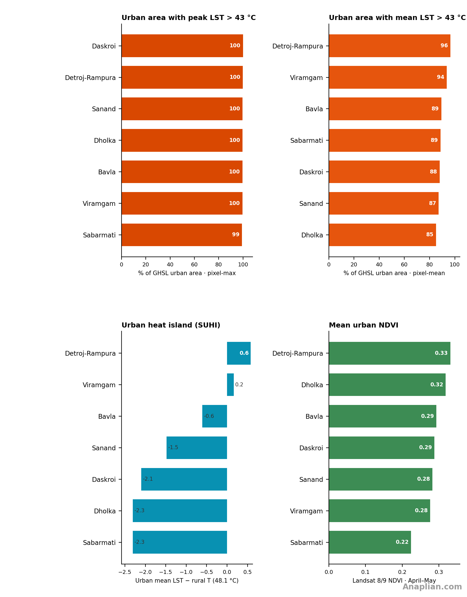

1. Introduction
The sustained rise in mean temperature and in its variability — more extreme days, longer heatwaves — falls on human settlements. The body sheds heat by radiation, convection and, above all, evaporation of sweat. When air and radiating surfaces block that loss, core temperature rises, the heart works harder to send blood to the skin, and water and electrolytes are lost. The outcome can be heat exhaustion, heat stroke or cardiovascular and renal strain. Night-time heat, typical of urban islands, cuts recovery during sleep. The risk is higher for older people, those with chronic illness, outdoor workers and residents of poorly ventilated or unshaded housing.
The purpose of this index is to quantify that surface heat load and make it comparable, so as to see where vulnerability concentrates and which urban traits foster it: pavement, sheds, vegetation deficit and heat islands relative to the surroundings. It does not replace demography or epidemiological surveillance; it ranks territory by surface exposure, with a fixed metric across cities.
The comparison works at two scales. Across cities, the same number sizes the problem against places that already apply good practice or illustrate solutions to heat concentration. Inside each city, the political units — in Ahmedabad, the talukas — locate the most problematic zones in more detail and point to authorities and residents with a direct stake in addressing them.
For data availability and comparability we use four Landsat layers. Three are surface temperature: the period maximum, the mean of the observations and the heat island, the differential between a nearby rural or less-urbanised reference zone and the temperature in the area. The fourth is a vegetation index (NDVI) that enters inverted: lower greenness is penalised, because vegetation has a clear cooling effect.
2. Position in the index
Ahmedabad ranks 1 of 18 cities measured in April and May 2026, with a Climate Vulnerability Index (IVC) of 61.1 out of 100. It leads because almost all of the urban fabric exceeds 43 °C at pixel-max (99 %) and at the composite mean (89 %). The rural reference is itself about 48 °C, so SUHI is -1.7 °C and adds nothing: this is background heat, not a classic city-versus-countryside island. Phoenix (55.4) comes next.

Inside the district the 7 talukas sit in a narrow band (58–63). Sabarmati leads (IVC 63): old city, riverfront and dense roofs along the Sabarmati. Viramgam, Detroj-Rampura, Sanand, Daskroi and Bavla follow within three points: peri-urban seats, GIDC sheds and highway asphalt. Dholka ranks last (58) with a little more green, not a cool refuge.
The ranking is almost flat because climate sets the floor: GHSL rural land already reaches ~48 °C, so z_SUHI is zero across most talukas. What remains is z_LST max, z_LST mean and a moderate greenness deficit. Shade, cool roofs and trees still matter for people; they barely move a city index when the surroundings are already above 43 °C.
Mexico City, third in the city ranking, is the opposite pattern: a strong heat island over a cool rural reference. Ahmedabad is the pre-monsoon load of Gujarat, with a pioneering heat-action plan that this index does not score.
Land cover in the five highest-IVC talukas is metal roofs, industrial sheds, highway asphalt and little tree canopy. Sabarmati is continuous urban roof along the river. Viramgam and Detroj-Rampura are town seats on a hot plain: pavement of the taluka head, bare lots, agricultural green that does not enter the urban mask. Sanand adds GIDC sheds, auto plants and loading yards. Daskroi is the eastern warehouse-and-ring belt. The Sabarmati river and peri-urban fields do not offset the slab the index sees.
3. Highest-IVC subdivisions
Among 296 political subdivisions of the 18 cities in the comparable index, all 7 Ahmedabad talukas enter the top 25: Sabarmati (11th, IVC 63), Viramgam (13th, IVC 62), Detroj-Rampura (18th, IVC 61), Sanand (19th, IVC 60), Daskroi (20th, IVC 60), Bavla (21st, IVC 60), Dholka (25th, IVC 58). The city is first because the whole district is a high floor, not because one neighbourhood saturates SUHI. The components chart shows z_LST max and z_LST mean near 1.0 and z_SUHI at zero: a hot plain, not an urban island.


4. Four methods
Comparable metric ivc-l4-v1. IVC = 100 × mean of zmax, zmean, zNDVI inv and zSUHI. City: IVC 61.1 · SUHI -1.7 °C · T rural 48.1 °C · 32 scenes · 11.3 obs./pixel · ~11:05 local time (5:35 UTC).
1. Per-pixel maximum LST
Maximum surface temperature. Landsat 8 and 9 Collection 2 Level 2, band 10 (ST_B10), 1 April–31 May 2026. 32 scenes; overpass ~11:05 local time (5:35 UTC). Per-pixel mask of fill, cloud, shadow and LST outside 0–80 °C. LST = 0.00341802×DN + 149 − 273.15. Maximum of valid observations (11.3 obs./pixel). Overlay and index: urban fraction > 43 °C.
2. Mean LST of observations
Mean surface temperature of observations. Same collection and mask. Mean of valid scenes. The map colours from 35 °C; the index uses the urban fraction > 43 °C.
3. Vegetation (NDVI)
Vegetation. NDVI = (NIR − red)/(NIR + red), SR_B5 and SR_B4. Period mean (32 scenes, ~11:05 local time (5:35 UTC)). Urban greenness: NDVI ≥ 0.30 inside GHSL SMOD ≥ 21. It enters the index inverted on a fixed 0.05–0.55 scale.
4. Heat island (SUHI)
Surface urban heat island. SUHI = pixel mean LST − rural T. T rural = 48.1 °C, GHSL 2020 SMOD 11–13 inside the polygon (3977 km² rural). Overlay: SUHI > 8 °C. z_SUHI = min(max(urban SUHI, 0) / 15, 1).
5. Per-pixel maximum surface temperature (> 43 °C)

6. Mean surface temperature of observations (> 35 °C)

7. Vegetation (NDVI)

8. Heat island (pixel − rural)

9. Four sub-index elements

Area 4780 km² · GHSL urban 795 km² (17%) · peak LST > 43 °C: 99% · mean LST > 43 °C: 89% · urban SUHI -1.7 °C · greenness 35% · city IVC 61.1.
10. Table of talukas
| # | Taluka | IVC | Peak LST > 43 °C | Mean LST > 43 °C | SUHI °C | Urban NDVI | Greenness | Obs./pixel |
|---|---|---|---|---|---|---|---|---|
| 1 | Sabarmati | 63.2 | 99% | 89% | -2.3 | 0.22 | 21% | 15.2 |
| 2 | Viramgam | 62.2 | 100% | 94% | 0.2 | 0.28 | 32% | 8.0 |
| 3 | Detroj-Rampura | 61.0 | 100% | 96% | 0.6 | 0.33 | 57% | 8.0 |
| 4 | Sanand | 60.1 | 100% | 87% | -1.5 | 0.28 | 41% | 11.3 |
| 5 | Daskroi | 60.1 | 100% | 88% | -2.1 | 0.29 | 41% | 13.8 |
| 6 | Bavla | 60.1 | 100% | 89% | -0.6 | 0.29 | 42% | 9.4 |
| 7 | Dholka | 57.8 | 100% | 85% | -2.3 | 0.32 | 51% | 17.0 |
11. Talukas
1. Sabarmati
Urban river-and-old-city taluka (IVC 63). Almost all of pixel-max and 89 % of the urban mean exceed 43 °C. The Sabarmati does not cool the slab: dense roofs, platforms and little green (NDVI 0.22). SUHI is negative because district rural land is already ~48 °C.
- IVC ivc-l4-v1 63.2 / 100
- Peak LST > 43 °C 99% urban · 50.6 °C
- Mean LST > 43 °C 89% urban · 45.8 °C
- Urban SUHI -2.3 °C vs T rural 48.1 °C
- Urban NDVI 0.22 · 21% · 293.6 km² (88%) · 15.2
In the taluka: old city, Sabarmati riverfront and continuous roofs; river water does not offset concrete or metal. Lack of canopy and platform asphalt drive 89 % of the urban mean above 43 °C.


2. Viramgam
Town on a hot plain (IVC 62). 100 % of urban pixel-max and 94 % of the mean cross 43 °C. Little GHSL urban land (6 %), but that land is seat-town asphalt and metal roofs on a peri-urban fabric that is already a background heat load.
- IVC ivc-l4-v1 62.2 / 100
- Peak LST > 43 °C 100% urban · 55.8 °C
- Mean LST > 43 °C 94% urban · 48.2 °C
- Urban SUHI 0.2 °C vs T rural 48.1 °C
- Urban NDVI 0.28 · 32% · 53.4 km² (6%) · 8.0
In the town seat: village asphalt and metal roofs on a plain that already exceeds 43 °C in April–May outside the city. The ‘urban’ bit is a pavement island in a hot sea, not a cool contrast.


3. Detroj-Rampura
Agricultural peri-urban belt (IVC 61). The share of mean > 43 °C is the district’s highest (96 %). Lots, bare soil and roofs; NDVI 0.33 is the greenest of the talukas, and the composite still does not fall below 43 °C.
- IVC ivc-l4-v1 61.0 / 100
- Peak LST > 43 °C 100% urban · 55.9 °C
- Mean LST > 43 °C 96% urban · 48.6 °C
- Urban SUHI 0.6 °C vs T rural 48.1 °C
- Urban NDVI 0.33 · 57% · 32.3 km² (9%) · 8.0
In the settlement: lots, bare soil and roofs; agricultural vegetation does not enter the urban index. That is why mean > 43 °C reaches 96 % despite a slightly higher NDVI.


4. Sanand
Industrial corridor (IVC 60). GIDC sheds, auto plants and yards. 100 % of urban pixel-max > 43 °C; SUHI stays negative: the sheds are as hot as the peri-urban plain, not hotter.
- IVC ivc-l4-v1 60.1 / 100
- Peak LST > 43 °C 100% urban · 53.2 °C
- Mean LST > 43 °C 87% urban · 46.6 °C
- Urban SUHI -1.5 °C vs T rural 48.1 °C
- Urban NDVI 0.28 · 41% · 117.7 km² (15%) · 11.3
On the GIDC corridor: sheds, yards and auto plants. Roof concrete and loading asphalt; the peri-urban belt is no cooler than the shed.


5. Daskroi
Eastern ring of the city (IVC 60). Warehouses, highway and open housing. 100 % of pixel-max and 88 % of the urban mean > 43 °C, with greenness 0.29 that does not cut the ring-road slab.
- IVC ivc-l4-v1 60.1 / 100
- Peak LST > 43 °C 100% urban · 51.4 °C
- Mean LST > 43 °C 88% urban · 46.0 °C
- Urban SUHI -2.1 °C vs T rural 48.1 °C
- Urban NDVI 0.29 · 41% · 119.1 km² (19%) · 13.8
On the eastern ring: warehouses, highway and open tracts. Ahmedabad’s peri-urban slab is the pattern: roof, yard and few trees.


6. Bavla
Southern axis of sheds and highway (IVC 60). 100 % of urban pixel-max > 43 °C and 89 % of the mean. Trailer asphalt and industrial roofs; the peri-urban belt offers no cool reference.
- IVC ivc-l4-v1 60.1 / 100
- Peak LST > 43 °C 100% urban · 54.9 °C
- Mean LST > 43 °C 89% urban · 47.5 °C
- Urban SUHI -0.6 °C vs T rural 48.1 °C
- Urban NDVI 0.29 · 42% · 99.9 km² (13%) · 9.4
On the southern axis: sheds, trailers and highway. Freight asphalt and industrial roofs keep the urban mean near 89 % above 43 °C.


7. Dholka
The least extreme taluka (IVC 58) and still in the global top 25. A little more green (NDVI 0.32) and 85 % of the mean > 43 °C. The district floor is already high: this is not ‘cool’, it is less slab.
- IVC ivc-l4-v1 57.8 / 100
- Peak LST > 43 °C 100% urban · 53.5 °C
- Mean LST > 43 °C 85% urban · 45.8 °C
- Urban SUHI -2.3 °C vs T rural 48.1 °C
- Urban NDVI 0.32 · 51% · 79.4 km² (8%) · 17.0
In Dholka town: a little more green and still 85 % of the mean > 43 °C. The district’s relative ‘cool’: fewer sheds, not an oasis.


12. Why Ahmedabad is in Priority 2
Priority 2 follows the same cut — more than two million inhabitants in 18–42 °N — and the same hazard × exposure × vulnerability frame, one step below the six headline cities. It does not replace Delhi or Karachi: it complements them. Lahore, Dhaka and Ahmedabad concentrate the growth of extreme-heat person-days in South Asia (Tuholske 2021); Phoenix is the ECOSTRESS reference for pavement burns (49–60 °C) already used in the project’s map style; Tehran adds a semi-arid megacity in a closed basin; Monterrey is Mexico City’s dry-industrial counterpart.
The metric is the same ivc-l4-v1 and the window remains April–May 2026, so that an IVC of 60 in a Lahore town is comparable to Iztapalapa or to a Phoenix urban village. In Lahore, Ahmedabad and Dhaka that window is pre-monsoon or hot season. In Phoenix and Monterrey the annual peak is June–August; they enter in spring on purpose so as not to break the fixed scale. Ahmedabad also has a pioneering heat-action plan in India: the index measures surface exposure, not the plan’s success.
Ahmedabad is India’s adaptation benchmark: it had the country’s first heat-action plan, but surface exposure remains very high. The cut uses district talukas within 55 km of the centre (Sabarmati, Daskroi, Sanand and peri-urban land), not the Dholera SIR. The IVC measures surface heat, not the plan’s success.